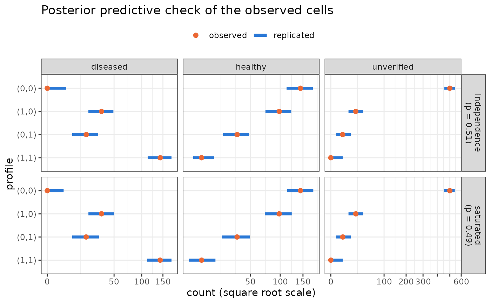

Compares models fitted with baysesp() to the same data by their expected
log predictive density for a new subject, estimated by leave-one-out
cross-validation (LOO), with the widely applicable information criterion
(WAIC) as a second estimate, and checks the fit of each model with posterior
predictive checks on the counts of the observed table.
Usage
compare_models(
...,
refit = TRUE,
verified_prior = prior_beta(0.5, 2),
level = 0.95
)Arguments
- ...
Two or more models fitted with
baysesp()to the same data. A single model is also accepted: then only its leave-one-out estimate and its checks are computed. The names of the arguments, if given (such ascompare_models(saturated = fit, independence = fit_ci)), are the labels of the models; otherwise the expressions are used. Models fitted to different data give an error.- refit
TRUEorFALSE, a single value. WithTRUE(default), for the log-linear and random effects models, each cell with Pareto \(k > 0.7\) is estimated exactly with a new fit; withFALSE, no new fit is run and a warning lists the models with unreliable cells. A new fit is also skipped, with a warning, when withverification = mnar()leaving out the subject would leave its profile with no verified subject.- verified_prior
Prior on the probability of verification of each profile, used for the part of verification of every model where it can be separated: the saturated models and the log-linear and random effects models with
verification = mar()(see Details). A single prior on a probability:prior_beta(), orprior_normal()orprior_student(), which act on its logit. Defaultprior_beta(0.5, 2), the uniform distribution. It replaces theverified_priorof the saturated models only within the comparison; their estimates do not change.- level
Probability of the intervals of the replicated counts in
checks, a single number in (0, 1). Default0.95.
Value
A list of class model_comparison, with print() and plot()
methods and two data frames:
table: one row per model, ordered by decreasingelpd_loo, withmodel(the label),elpd_looand its standard errorse_loo,elpd_diff(difference from the first model, 0 for the first) and its standard errorse_diff,p_loo(effective number of parameters, the log predictive density of the data minuselpd_loo),elpd_waicandp_waic,loo_method("exact","psis"or"psis"followed by the number of new fits),high_k(number of cells with Pareto \(k > 0.7\);NAfor the saturated model, whose leave-one-out is exact and has no Pareto \(k\), printed as-) andppc_pvalue(the p-value of the chi-square discrepancy).checks: one row per model and cell, withmodel,profile(written as"(0,1)"),cell("diseased","healthy"or"unverified"),observed(the count),expected(posterior predictive mean of the count),lowerandupper(interval of the replicated count with probabilitylevel) andp_value(two-sided posterior predictive p-value of the cell).
Details
What is compared. The data are the counts of the cells of the observed table: for each response profile \(t\) of the tests, the verified diseased \(n_{t,1}\), the verified healthy \(n_{t,0}\) and the unverified \(u_t\) (the verified cells of the profiles with no verified subject are empty by design and are left out). Every model gives each cell a probability: with prevalence \(\pi\), distributions of the profiles \(\theta_{d,t}\) among the diseased (\(d = 1\)) and the healthy (\(d = 0\)) and probabilities of verification \(\lambda_{t,d} = P(V = 1 \mid T = t, D = d)\), $$P(t, V = 1, D = d) = \pi_d\, \theta_{d,t}\, \lambda_{t,d}, \qquad P(t, V = 0) = \sum_d \pi_d\, \theta_{d,t}\, (1 - \lambda_{t,d}),$$ with \(\pi_1 = \pi\) and \(\pi_0 = 1 - \pi\).
The part of verification. The probability of the observed table
includes which subjects were verified, also under verification = mar(),
where this part is ignored when the model is fitted: this makes the models
with verification = mar() and verification = mnar() comparable. With
MAR, \(\lambda_{t,1} = \lambda_{t,0} = v_t\), a free probability of
verification for each profile with verified subjects, independent of the
other parameters; the same \(v_t\) is the verified fraction of the
saturated model, also with verification = mnar(), where the odds ratio
does not enter the likelihood. In all these models, \(v_t\) is given the
prior verified_prior, the same for every model, in place of the
verified_prior of a saturated model. Its contribution is then the same in
every model and cancels in the differences between them: these models are
compared only on how they describe the tests. Its posterior is
\(p(v_t) \propto \textrm{prior}(v_t)\, v_t^{n_{t,1} + n_{t,0}} (1 - v_t)^{u_t}\),
a Beta distribution for a Beta prior; its draws are taken in R (set the
seed for reproducible results), and its leave-one-out predictions are exact.
Under verification = mnar() in the log-linear and random effects models,
verification depends on the disease and cannot be separated: it follows the
priors of the model, intercepts_prior and odds_ratio_prior of mnar().
To compare these models with the others, choose a verified_prior close to
the prior that intercepts_prior gives to verification, such as
verified_prior = prior_normal(0, 2.5) for the default
intercepts_prior = prior_normal(0, 2.5): then the comparison is not driven
by different priors on verification.
Leave-one-out. The unit left out is the subject, not the cell. The subjects of the same cell are identical, so there are at most as many distinct leave-one-out predictions as cells, and the contribution of a cell is multiplied by its count. The expected log predictive density is $$\mathrm{elpd}_{\mathrm{loo}} = \sum_c n_c \log p(y_c \mid y_{-c}),$$ where \(n_c\) is the count of cell \(c\) and \(p(y_c \mid y_{-c})\) the posterior predictive probability of a subject in cell \(c\) given all the other subjects (Vehtari, Gelman and Gabry, 2017). Its standard error is \(\sqrt{N}\) times the standard deviation of the \(N\) contributions of the subjects. Higher values mean better predictions; a difference smaller than about twice its standard error is not clear evidence.
For the saturated model the leave-one-out predictions are exact and in
closed form: the posterior of the profile frequencies is Dirichlet and the
posteriors of \(v_t\) and of the proportion of diseased among the
verified \(\phi^{(1)}_t\) are independent, so the predictions are ratios
of Dirichlet-multinomial and Beta-binomial marginal likelihoods (with
verified_prior for \(v_t\)). With a
prior on the logit scale (normal or Student-t) the one-dimensional marginal
likelihoods are computed by numerical integration. The proportion of
diseased in the never-verified profiles and the odds ratio of verification
do not enter the likelihood of the saturated model and do not change its
predictions.
For the log-linear and random effects models, leave-one-out is estimated by
Pareto smoothed importance sampling (PSIS-LOO) from the posterior draws
(Vehtari et al., 2024). The estimated shape \(k\) of the Pareto
distribution says whether the estimate of a cell is reliable: above 0.7 it
is not, and with refit = TRUE the model is fitted again without one
subject of that cell, with the sampling settings of the original fit, and
the prediction is computed exactly from the new draws. There are at most as
many new fits as cells. Small cells, such as the verified diseased among
the subjects with all tests negative, are the influential ones.
WAIC. The widely applicable information criterion (Watanabe, 2010) is an asymptotic approximation of leave-one-out. It is computed cell by cell, as the log of the posterior mean of the probability of the cell minus its posterior variance on the log scale, and multiplied by the counts. When it differs from the leave-one-out estimate by more than 1, a warning is given: the approximation is not reliable for these data, usually because of small cells, and the leave-one-out estimate should be used.
Posterior predictive checks. For each posterior draw a table with the same number of subjects is drawn from the probabilities of the cells (Gelman, Meng and Stern, 1996). Each observed count is compared with the distribution of its replicates, with a two-sided posterior predictive p-value, \(2 \min\{P(y^{\mathrm{rep}}_c \ge y_c), P(y^{\mathrm{rep}}_c \le y_c)\}\) (at most 1). The whole table is compared with the chi-square discrepancy \(X^2 = \sum_c (y_c - E_c)^2 / E_c\), with \(E_c\) the expected count under the draw: the p-value is the proportion of draws in which the discrepancy of the replicated table is at least that of the observed table. Small p-values mean that the model does not reproduce the data.
What the data cannot tell. All the models are compared on the observed
cells only. Two saturated models that differ only in the prior on the
proportion of diseased in the never-verified profiles
(unverified_prevalence_prior), in the verification mechanism
(verification = mar() or verification = mnar()) or in their own
verified_prior, replaced here by the common one, give the same
probability to the observed data: the comparison cannot tell them apart, and
a warning says so. The effect of these choices is shown by varying them,
as sensitivity_analysis() does. In the same way, a structured model that
predicts the observed cells well is not confirmed in what it assumes about
the unobserved disease status of the unverified subjects.
References
Gelman, A., Meng, X.-L. and Stern, H. (1996). Posterior predictive assessment of model fitness via realized discrepancies. Statistica Sinica, 6(4), 733–807. https://www3.stat.sinica.edu.tw/statistica/j6n4/j6n41/j6n41.htm
Vehtari, A., Gelman, A. and Gabry, J. (2017). Practical Bayesian model evaluation using leave-one-out cross-validation and WAIC. Statistics and Computing, 27(5), 1413–1432. doi:10.1007/s11222-016-9696-4
Vehtari, A., Simpson, D., Gelman, A., Yao, Y. and Gabry, J. (2024). Pareto smoothed importance sampling. Journal of Machine Learning Research, 25(72), 1–58. https://jmlr.org/papers/v25/19-556.html
Watanabe, S. (2010). Asymptotic equivalence of Bayes cross validation and widely applicable information criterion in singular learning theory. Journal of Machine Learning Research, 11(116), 3571–3594. https://jmlr.org/papers/v11/watanabe10a.html
Examples
# \donttest{
set.seed(1)
d <- simulate_study(n = 1000, prevalence = 0.2,
sensitivity = c(A = 0.9, B = 0.8),
specificity = c(A = 0.85, B = 0.95),
verification_prob = c(0.2, 0.9, 0.9, 1))
d <- baysesp_data(d, tests = c("A", "B"), verified = "verified", disease = "disease")
fit <- baysesp(d, seed = 1)
fit_ci <- update(fit, model = loglinear(interaction_order = 1))
cmp <- compare_models(saturated = fit, independence = fit_ci)
cmp
#> Expected log predictive density of a new subject (leave-one-out)
#>
#> model elpd_loo se_loo elpd_diff se_diff p_loo
#> independence -1573.03 32.84 0.00 0.00 7.90
#> saturated -1573.28 32.86 -0.25 0.76 8.93
#>
#> Reliability of the estimates and fit to the data
#>
#> model loo_method high_k elpd_waic p_waic ppc_pvalue
#> independence psis 0 -1573.02 7.89 0.51
#> saturated exact - -1573.32 8.98 0.49
#>
#> elpd_diff: difference from the first model, with standard error se_diff.
#> high_k: cells with Pareto k > 0.7 (- for exact leave-one-out, which has no k).
#> ppc_pvalue: posterior predictive p-value of the chi-square discrepancy
#> between observed and expected counts.
plot(cmp)

# }